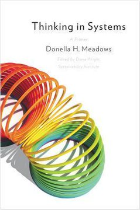
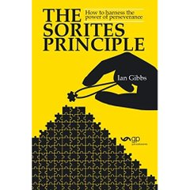
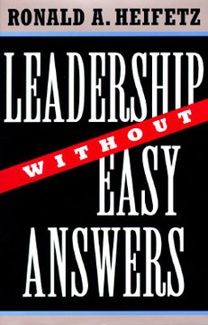

Módulo 01 / Apartado 2 de 5
Complicado o complejo
Se usan como sinónimos todo el rato y no lo son. Esta distinción sostiene la disciplina entera, así que merece la pena entenderla bien antes de seguir.
Empecemos por lo más básico: qué es un sistema
Un sistema es un conjunto de cosas que se afectan entre sí. Un motor es un sistema. Un equipo de trabajo es un sistema. Una ciudad, un cuerpo humano y el mercado inmobiliario también.
Para describir cualquiera de ellos hacen falta tres piezas y nada más. Se las debemos a Donella Meadows, que se pasó la vida explicando esto a gente que no era ingeniera.

El libro de esto Thinking in SystemsMeadows fue una de las autoras de Los límites del crecimiento, el informe de 1972. Este libro es el destilado de treinta años explicando sistemas sin ecuaciones, y es el que te da el idioma: sin él, «realimentación» y «punto de apalancamiento» son palabras que suenan bien y no significan nada. — Donella Meadows, póstumo 2008
Los dos tipos de bucle
- De refuerzo
- Cuanto más hay, más entra. El dinero que genera intereses que generan más intereses. La empresa que gana cuota y por eso gana más cuota. Producen crecimientos explosivos y también hundimientos rápidos, porque funcionan igual de bien hacia abajo.
- De equilibrio
- Cuanto más te alejas del objetivo, más fuerza hay para volver. El termostato. Es lo que hace que un sistema resista tus cambios sin que nadie esté saboteando nada.
El retardo, que es donde te la pegas
Entre que actúas y que se nota el efecto pasa tiempo. Como no lo ves, insistes. Y cuando por fin llega el efecto de lo primero, más el de lo segundo, te pasas.
Es la ducha de un hotel. Abres el agua caliente, no pasa nada, abres más, y a los diez segundos te quemas. Con una plantilla, con el presupuesto de publicidad o con los tipos de interés pasa exactamente igual, solo que el retardo es de meses y la ducha cuesta millones.
Dónde empujar: los doce puntos de apalancamiento
La idea más citada de Meadows, y la que publicó en un ensayo aparte en 1997 después de salir harta de una reunión sobre el tratado de libre comercio norteamericano. En todo sistema hay sitios donde un empujón pequeño cambia mucho, y sitios donde puedes empujar todo lo que quieras sin que pase nada. Son doce, ordenados del menos potente al más potente.
El ejemplo que mejor explica el número 6 es suyo y es de los que se recuerdan: en unas casas idénticas, poner el contador de la luz en el recibidor en vez de en el sótano bajó el consumo. Nadie cambió el precio, ni puso una norma, ni dio una charla. Solo cambió quién veía qué.
Guarda esta escalera, porque sirve como pregunta de bolsillo delante de cualquier problema: ¿en qué nivel estoy empujando? Si discutes cifras de presupuesto para algo que es de reglas o de objetivos, puedes llevar razón en todo y no mover nada.
Atajo honesto. El ensayo Leverage Points son doce páginas, está gratis en la web de la fundación Meadows y trae la lista completa. Si no vas a leer el libro, léete eso.
Complicado
Un motor de coche es complicado. Tiene miles de piezas, tú no tienes ni idea de cómo va, pero hay gente que sí. Lo abren, encuentran la pieza que falla, la cambian y el coche arranca.
Lo que define a un problema complicado es que la solución existe y hay alguien que la sabe. Puede costar mucho dinero, mucho tiempo y mucha formación, pero el camino está trazado. Si te tocara a ti resolverlo, tu problema sería de recursos, no de conocimiento.
Complejo
Ahora piensa en por qué se te va la gente buena de la empresa. Ahí hay salarios, hay un jefe concreto, hay lo que se cuece en el mercado, hay la vida personal de cada uno, y hay el hecho de que cuando se va uno bueno los demás se replantean cosas. Todo eso se afecta entre sí.
Ahí no hay un experto que abra el capó y cambie la pieza, porque las piezas son personas que reaccionan a lo que hagas. Si subes los sueldos, cambias otras cosas que no habías previsto. Y hasta el que analiza el problema forma parte del problema, porque en cuanto se sabe que hay una consultora mirando, la gente ya se comporta distinto.
La mala noticia: no hay una raya en el suelo
Aquí es donde Recuenco mete un matiz que fastidia. La complejidad es continua. No existe un punto donde un problema complicado se convierte en complejo. Es un degradado.
Es un rompecabezas griego viejísimo, la paradoja de Sorites. Tienes un montón de arena. Le quitas un grano: sigue siendo un montón. Le quitas otro: sigue siéndolo. Repites lo suficiente y acabas con tres granos, que no son un montón. ¿En cuál dejó de serlo?
No hay respuesta, y no porque no lo hayamos pensado bien. La palabra «montón» simplemente no tiene un borde. Con «complejo» pasa exactamente igual.
La consecuencia práctica es que preguntar «¿esto es complejo o solo complicado?» esperando un sí o un no te va a llevar a discusiones estériles. La pregunta útil es otra: cuánto de complejo, y en qué parte concreta.

El libro de esto The Sorites PrincipleEl libro que cita en la turra de complejidad y aleatoriedad. Coge la paradoja griega y la aplica a la perseverancia: cómo los cambios diminutos que no notas acaban siendo el cambio entero. — Sobre la paradoja del montón
Cynefin, y la pega que le pone
Si lees sobre esto te vas a cruzar con Cynefin enseguida, así que conviene saber qué es.
Es un marco creado por Dave Snowden a finales de los noventa, cuando trabajaba en IBM. La palabra es galesa, se pronuncia más o menos «kunevin», y significa algo así como el sitio del que vienes sin saberlo del todo. Se hizo famoso con un artículo en la Harvard Business Review en 2007, firmado con Mary Boone.
Lo que hace es sencillo de decir y difícil de aplicar: antes de decidir qué haces, decide en qué tipo de sitio estás. Porque cada tipo de situación pide una manera distinta de moverse, y aplicar la del vecino es la fuente número uno de desastres.
Lo que hay que sacar de aquí
Fíjate en la columna de la izquierda y en la de la derecha, porque ahí está todo. A la derecha, el orden: la respuesta existe, y la discusión es si hace falta un experto o basta con el manual. A la izquierda no hay respuesta esperándote, y la única manera de enterarte de algo es meter la mano y ver qué pasa.
El error caro, otra vez el mismo de todo el módulo, es tratar algo de la izquierda con los métodos de la derecha. Contratar a un experto para un problema complejo produce un informe excelente que no arregla nada.
Y ojo con el centro. No es un quinto dominio bonito de rellenar: es donde empieza casi todo el mundo, sin saber en cuál de los cuatro está. Snowden lo llama ahora confusión y aporía, y lo describe como el punto desde el que puedes caer a cualquiera de los otros. Que la aporía aparezca aquí no es casualidad: es el mismo concepto que Recuenco usa en el módulo 5.
La discusión de este mes
Esto está vivo. En septiembre de 2026, Ubaldo Hervás publicó que había salido una versión nueva y oficial del marco, y decía que la anterior le gustaba más: se entendía mejor, y él había hecho suya la idea de contraponer el lado derecho de Cynefin frente al izquierdo. La novedad que le chirría es justo la que ves en el diagrama, que Claro y Complicado queden unidos bajo un mismo espacio de orden.
Recuenco lo compartió con un comentario corto que vale como resumen de todo el apartado: cada uno aborda los problemas para los que está cualificado. Traducido: la gente no elige el dominio según el problema, lo elige según lo que sabe hacer. Y por eso al del martillo todo le parecen clavos.
Recuenco tiene a Snowden en muy alta estima, y aun así le pone un pero. Para entender la naturaleza de la complejidad, dice, Cynefin te abre los ojos. Pero al pintar fronteras claras entre reinos, simplifica lo que después te encuentras en una empresa de verdad.
Su imagen alternativa la toma prestada de la física, y la usa sabiendo que a Snowden le saca de quicio que se meta la palabra «cuántico» en una presentación, porque suele anunciar que lo siguiente va a ser un camelo.
En física cuántica, dos partículas entrelazadas no se pueden describir por separado: no tienen un estado propio cada una, solo un estado conjunto. A eso se le llama no separabilidad.
Trasladado a una empresa: los problemas no se pueden separar y repartir. El problema de ventas, el de gestión y el de la gente son el mismo problema visto desde tres sitios. Si has escrito código alguna vez ya sabes cómo se nota: arreglas un error y aparecen tres.
La estampa típica. Una empresa con problemas no tiene «un» problema. Tiene lío de gestión, necesidad de financiación, la demanda cayendo y una tormenta de factor humano, todo a la vez. Y adivina cuál se ataca primero: la tecnológica. Porque se compra con dinero, no obliga a cuestionar a nadie y encima queda moderno.
Otra manera de trazar la raya: quién tiene que cambiar
Hay una segunda forma de separar los dos tipos de problema, y para el caso práctico es todavía más útil que la anterior. La propuso Ronald Heifetz, y no clasifica por lo difícil que sea el problema, sino por quién tiene que hacer el trabajo.

El libro de esto Leadership Without Easy AnswersHeifetz es psiquiatra y acabó dando clase de liderazgo. Su queja: casi toda la literatura describe al líder como alguien que tiene la respuesta, y eso solo sirve para una clase de problemas. No está en la guía docente de la UNIR, pero es quien mejor formula la frontera de este módulo. — Ronald Heifetz, Harvard 1994
Por qué se confunden tanto: porque tratar algo como técnico es más cómodo para todos. El que manda lo encarga fuera y sigue con lo suyo, y la gente no tiene que cambiar de costumbres. Heifetz dice que la presión sobre cualquier directivo va siempre en esa dirección, que dé una respuesta y quite el problema de encima. Cuando alguien pide una solución rápida a algo que exige que media plantilla cambie de hábitos, no está siendo tonto: está pidiendo alivio.
Lo que propone hacer en su lugar
Son cinco principios de trabajo adaptativo, más una práctica previa que lo sostiene todo y que es por la que más se le conoce: subirse al balcón.
Salir de la pista de baile y mirar desde arriba. Ver los patrones de quién reacciona a qué, en vez de estar dentro reaccionando tú también.
Un problema real casi siempre tiene las dos. Lo útil es distinguirlas, porque la técnica se delega y la adaptativa no.
Ni tanta que la gente se bloquee ni tan poca que nadie se mueva. Sostiene que mantener esa tensión en un rango útil es el trabajo principal de quien dirige un cambio.
Cuando aprieta, aparecen distracciones: buscar culpables, reorganizar el organigrama, atacar al mensajero. Todas cumplen la función de no hablar de lo que hay que hablar.
La operación clave. Si el problema exige que cambie la gente, la solución no puede venir de fuera. Hay que resistirse a dar la respuesta aunque te la pidan, y sobre todo aunque la tengas.
En cualquier organización hay alguien señalando el problema incómodo, y suele ser alguien sin poder. Heifetz dice que a esa gente la queman, y que protegerla es parte del oficio.
Esto explica también el tercer filtro que veremos en el apartado 4, el del ego: si el que decide tiene que cambiar él para que la cosa funcione, el trabajo adaptativo empieza por su propia silla.
El límite. Heifetz escribe desde una escuela de gobierno y sus casos son políticos o sanitarios. Es fuerte diagnosticando y flojo diciéndote qué hacer el lunes por la mañana. Para eso están las metodologías del módulo 5.
Por qué el cambio se deshace solo
Última pieza del apartado, y explica más cosas de las que parece.
Es lo que hace tu cuerpo para mantenerse igual pase lo que pase fuera. Hace calor y sudas; hace frío y tiritas. Tu temperatura se queda en 36 y pico porque hay una red de mecanismos que compensan cualquier cosa que venga de fuera.
Una organización tiene lo mismo. Metes un cambio y el sistema entero empieza a compensarlo hasta dejar las cosas más o menos donde estaban. Por eso tantas transformaciones se diluyen sin que nadie las haya saboteado a propósito.
El ejemplo que usa para que se quede grabado es de los que impresionan. Una persona mayor operada de cadera tiene alrededor de un 30% de probabilidades de morir en el primer año. Peor pronóstico que algunos cánceres. Y no es por la cadera: es que el organismo entero, ya frágil, no logra recuperar su equilibrio después del golpe.
Lo que hay que llevarse de este apartado
- Complicado quiere decir que hay solución y hay experto. Complejo quiere decir que las piezas se contestan entre ellas.
- No hay frontera entre los dos. Es un degradado, y preguntar «¿cuál de los dos es?» no lleva a ningún sitio.
- Cynefin sirve para orientarte, con la advertencia de que la realidad no viene con las rayas pintadas.
- Los problemas de una organización no se dejan repartir por departamentos.
- Los sistemas se defienden. Si tu cambio se ha diluido, probablemente no te ha saboteado nadie.
Fuentes de este apartado
Las turras de las que sale
La turra más teórica del corpus y la que fija el vocabulario. Aquí desmonta que la complejidad de Kolmogórov mida complejidad, introduce la paradoja de Sorites, le pone la pega a Cynefin y propone el entrelazamiento cuántico como metáfora. Termina con la homeostasis y el dato de las operaciones de cadera.
Nuestra relación complicada con la complejidad51 tweets · may 2022Va sobre por qué nos cuesta tanto tolerar lo complejo. Tiene una digresión larguísima sobre guitarristas virtuosos que parece un capricho y no lo es: los usa para separar la complejidad que impresiona de la que sirve para algo.
El umbral entre la complejidad y la serendipia45 tweets · nov 2022Aquí define el sensemaking con precisión académica y traza su linaje hasta Katz, Kahn y Weick. Es de donde sale la frase de que un sistema lo bastante complejo es indistinguible de uno aleatorio, y también aquella de que el 80% de todo es factor humano.
Los libros que se citan ahí dentro
Coge la paradoja griega de los granos de arena y la aplica a la perseverancia y al cambio personal. La idea: los cambios que no notas de un día para otro son exactamente los que acaban siendo el cambio entero. Recuenco lo cita en la turra donde explica que la complejidad no tiene frontera.
 Managing the UnexpectedKarl Weick y Kathleen Sutcliffe · 2001
Managing the UnexpectedKarl Weick y Kathleen Sutcliffe · 2001Estudia cómo funcionan las organizaciones que no se pueden permitir un fallo: portaaviones, centrales nucleares, urgencias hospitalarias. Saca cinco principios, entre ellos la preocupación permanente por el fallo, la resistencia a simplificar y dejar decidir a quien más sabe aunque no sea el que más manda. De lo más aplicable de toda la bibliografía.
 The Great Mental ModelsShane Parrish · 2019
The Great Mental ModelsShane Parrish · 2019Un catálogo de modelos mentales generales para pensar mejor: el mapa no es el territorio, el círculo de competencia, pensar desde primeros principios, la inversión. Es divulgación, no filosofía, y funciona bien como caja de herramientas de andar por casa.
Thinking in SystemsDonella Meadows · 2008El libro que te da el vocabulario de sistemas: depósitos, flujos, bucles que se refuerzan, bucles que se equilibran, retardos y puntos de apalancamiento. Explica con ejemplos sencillos por qué un sistema devuelve el cambio que le metes. Su ensayo corto Leverage Points está gratis en la web de la fundación y es el 80% del valor.
Para ver
Un señor tocando dos guitarras simultáneamente a una velocidad imposible. Sale en la turra por un motivo concreto: es complicadísimo, requiere una destreza enorme, y aun así casi nadie diría que es la mejor música que ha escuchado. Complicado y bueno no son la misma cosa.
Panel sobre el futuro de la soberaníaCon Recuenco · debate largoMesa redonda donde se le ve discutir en directo con gente que no piensa como él, que es donde mejor se aprecia cómo maneja un problema con varios frentes a la vez. Útil para ver el método en movimiento y no solo explicado.